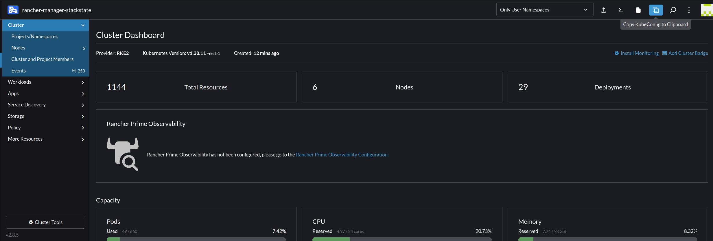
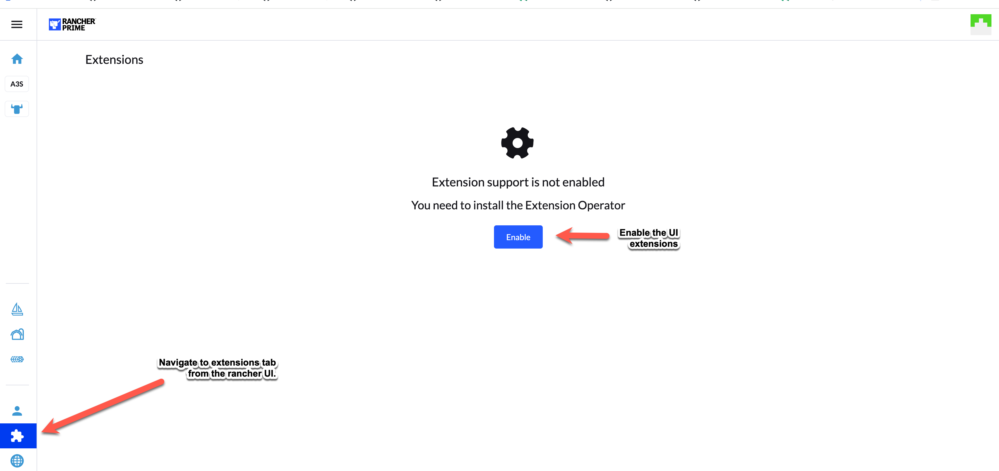

|
本文档采用自动化机器翻译技术翻译。 尽管我们力求提供准确的译文，但不对翻译内容的完整性、准确性或可靠性作出任何保证。 若出现任何内容不一致情况，请以原始 英文 版本为准，且原始英文版本为权威文本。 |
SUSE® Observability
简介
SUSE® Observability，原名 StackState，可用于实现对您的 Kubernetes 集群及其工作负载的可观测性。
安装 SUSE® Observability、SUSE® Observability UI 扩展和 SUSE® Observability 代理总共需要大约 30 分钟。
获得帮助
如需支持，请在 SUSE 客户中心 (SCC) 提交支持案例。
先决条件
许可证密钥
可以通过 SUSE 客户中心的订阅选项卡获取 SUSE® Observability 服务器的许可证密钥，并将显示为 "SUSE® Observability" 注册代码。此许可证在您的 Rancher Prime 订阅结束之前有效。
要求
要安装 SUSE® Observability，请确保集群具有足够的处理器和内存容量。以下是具体要求。
有不同的安装选项可供 SUSE® Observability 使用。可以在高可用性 (HA) 或单实例 (非 HA) 设置中安装 SUSE® Observability。非 HA 设置建议用于测试目的或小型环境。对于生产环境，建议在 HA 设置中安装 SUSE® Observability。
HA 生产设置可以支持从 150 到 4000 个被观察节点。在此规模表中，被观察节点被视为 4 个 vCPU 和 16GB 内存，即我们的 default node size。
如果您观察的集群中的节点较大，它们可以计算为多个 default nodes，因此一个 12 vCPU 和 48GB 的节点在选择控制文件时计为 3 个 default nodes。
非 HA 设置最多可支持 100 个被观察的 default nodes。
下表描述了在集群中部署 SUSE® Observability 服务器所需的资源，考虑到将被观察的 default nodes 数量以及安装是否应为 HA。
| 试用版 | 10 个非 HA | 20 个非 HA | 50 个非 HA | 100 个非 HA | 150 HA | 250 HA | 500 HA | 4000 HA | |
|---|---|---|---|---|---|---|---|---|---|
处理器请求（核心） |
6.945 |
6.945 |
9.245 |
13.945 |
23.545 |
49.245 |
61.245 |
84.745 |
210.05 |
处理器限制（核心） |
15.02 |
15.02 |
19.32 |
28.72 |
47.87 |
104 |
127 |
175.38 |
278.95 |
内存请求 |
23180Mi |
23180Mi |
27056Mi |
31582Mi |
48088Mi |
129958Mi |
142426Mi |
161106Mi |
264330Mi |
内存限制 |
23718Mi |
23718Mi |
27708Mi |
31614Mi |
48120Mi |
134762Mi |
147030Mi |
165910Mi |
327550Mi |
存储 |
153613Mi |
338957Mi |
379917Mi |
482317Mi |
533517Mi |
2654430Mi |
2756950Mi |
3678260Mi |
7159862Mi |
| 额外需要20%的资源用于不等分配的pod、控制平面和代理安装。 |
|
控制文件所示的要求代表运行SUSE® Observability服务器所需的总资源量。 为了确保 SUSE Observability 服务器的所有不同服务可以分配：
|
|
试用设置为一个 10 个非 HA 安装，配置了 3 天的保留期，并且对磁盘空间的要求较低。 |
这些只是SUSE® Observability在不同安装选项中可以消耗的资源的上限和下限。实际的资源使用将取决于使用的功能、配置的资源限制和动态使用模式，例如Deployment或DaemonSet的扩展。对于我们的Rancher Prime客户，我们建议从默认要求开始，并监控SUSE® Observability组件的资源使用情况。
|
最低要求不包括额外的CPU/内存容量，以确保应用程序的平滑滚动更新。 |
存储
SUSE® Observability为需要存储数据的服务使用持久卷声明。集群的默认存储类将用于所有服务，除非通过命令行或`values.yaml`文件中指定的值进行覆盖。所有服务都配备了预配置的卷大小，应该足以让您开始，但可以根据需要稍后使用变量进行自定义。
|
SUSE® Observability要求底层存储基于闪存（SSD）或具有类似性能。 |
|
对于生产环境，不建议在SUSE® Observability中使用NFS进行存储配置，因为存在数据损坏的潜在风险。 |
对于我们的不同安装配置，以下是默认的存储要求：
| 试用版 | 10 个非 HA | 20 个非 HA | 50 个非 HA | 100 个非 HA | 150 HA | 250 HA | 500 HA | 4000 HA | |
|---|---|---|---|---|---|---|---|---|---|
保留（天） |
3 |
30 |
30 |
30 |
30 |
30 |
30 |
30 |
30 |
存储要求 |
125GB |
280GB |
420GB |
420GB |
600GB |
2TB |
2TB |
2.5TB |
5.5TB |
有关使用的默认值的更多详细信息，请参见页面 配置存储。
不同的组件
SUSE® Observability 服务器
这是安装的本地托管服务器部分。它包含一组服务来存储可观测性数据：
-
拓扑 (StackGraph)
-
指标 (VictoriaMetrics)
-
追踪 (ClickHouse)
-
日志 (ElasticSearch)
此外，它还包含一组用于所有可观测性任务的服务，例如通知、状态管理、监控等。
在哪里安装 SUSE® Observability 服务器
SUSE® Observability 服务器应安装在其专用的下游集群中，以便进行可观测性。请参见下面的图片以供参考。
为了使 SUSE® Observability 能够正常工作，需要：
-
在可观测性集群中需要有 Kubernetes 持久存储 来存储指标、事件等。
-
可观测性集群需要支持一种方式，通过 HTTPS URL 将 SUSE® Observability 暴露给 Rancher、SUSE® Observability 用户和 SUSE® Observability 代理。这可以通过使用 Ingress 控制器的 Ingress 配置来完成，或者 (云) 负载均衡器也可以为 SUSE® Observability 服务做到这一点，更多信息请参见 Rancher 文档。

安装 SUSE® Observability
|
注意事项 如果您是通过 Rancher 管理器创建集群，并希望从本地终端运行下面的配置命令，而不是在网页终端中运行，只需从集群仪表板复制或下载 kubeconfig，见下图，然后将其粘贴（或将下载的文件放置）到您可以轻松找到的文件中，例如 ~/.kube/config-rancher，并设置环境变量 KUBECONFIG=$HOME/.kube/config-rancher。 |

在满足先决条件后，您可以继续进行安装。该安装尚未在应用商店中提供。相反，您可以通过集群的 kubectl shell 安装 SUSE® Observability。
您现在可以按照下面的说明进行 HA 或 NON-HA 设置。
|
请注意，从 HA 升级或降级到 NON-HA 及反之尚不支持。 |
安装
-
获取 helm 图表
helm_repo.shhelm repo add suse-observability https://charts.rancher.com/server-charts/prime/suse-observability helm repo update -
创建配置并部署
-
推荐的方法
-
遗留方法（已弃用）
从版本
global.suseObservability开始提供2.8.0配置方法。对于早期版本，请使用遗留方法。创建一个包含您配置的
values.yaml文件：global: # Optional: Override image registry (defaults to registry.rancher.com) # Only needed for air-gapped environments or custom registries # imageRegistry: "your-private-registry.example.com" suseObservability: # Required: Your {stackstate-product-name} license key license: "YOUR-LICENSE-KEY" # Required: Base URL for {stackstate-product-name} baseUrl: "https://observability.example.com" # Required: Sizing profile # Available: trial, 10-nonha, 20-nonha, 50-nonha, 100-nonha, # 150-ha, 250-ha, 500-ha, 4000-ha sizing: profile: "150-ha" # Required: Plain text Admin password adminPassword: "your-password" # Instead of adminPassword you can provide a bcrypt hashed password with adminPasswordBcrypt # Generate with: htpasswd -bnBC 10 "" "your-password" | tr -d ':\n' # adminPasswordBcrypt: "$2a$10$..." # Optional: Receiver API key (auto-generated if not provided) # receiverApiKey: "your-receiver-api-key" # Optional: Affinity for pod scheduling (see affinity documentation) # affinity: # nodeAffinity: ... # podAntiAffinity: # requiredDuringSchedulingIgnoredDuringExecution: truebaseUrl必须是 SUSE® Observability 可被 Rancher、用户和 SUSE® Observability 代理访问的 URL。URL 必须包含方案，例如https://observability.internal.mycompany.com。另请参见 访问 SUSE® Observability。sizing.profile应为试用、10-nonha、20-nonha、50-nonha、100-nonha、150-ha、250-ha、500-ha、4000-ha 之一。根据此控制文件，资源和配置会自动应用于 HA 或非 HA 模式。目前，从非 HA 环境迁移到 HA 环境是不可能的，因此如果您预计您的环境需要观察大约 150 个节点，请立即选择 HA 控制文件。使用单个命令进行部署：
helm_deploy.shhelm upgrade --install \ --namespace suse-observability \ --create-namespace \ --values values.yaml \ suse-observability \ suse-observability/suse-observability或者，直接使用
--set标志而不使用值文件进行部署：helm upgrade --install \ --namespace suse-observability \ --create-namespace \ --set global.suseObservability.license="YOUR-LICENSE-KEY" \ --set global.suseObservability.baseUrl="https://observability.example.com" \ --set global.suseObservability.sizing.profile="150-ha" \ --set global.suseObservability.adminPassword='$2a$10$...' \ suse-observability \ suse-observability/suse-observability使用单个默认密码非常适合开始使用 SUSE® Observability，但对于生产设置，更安全的身份验证选项 可用。
有关亲和性配置选项，请参阅 配置 Kubernetes 亲和性。
此方法已弃用。对于新安装，请使用上述推荐的方法。对于使用此方法的现有安装，请参见 迁移指南 以过渡到新的配置格式。
生成 helm 图表值文件：
helm_template.shexport VALUES_DIR=. helm template \ --set license='<your license>' \ --set baseUrl='<suse-observability-base-url>' \ --set rancherUrl='<rancher-prime-base-url>' \ --set sizing.profile='<sizing.profile>' \ suse-observability-values \ suse-observability/suse-observability-values --output-dir $VALUES_DIRbaseUrl必须是 SUSE® Observability 可被 Rancher、用户和 SUSE® Observability 代理访问的 URL。URL 必须包含协议，例如https://observability.internal.mycompany.com。另请参见 访问 SUSE® Observability。要在 Rancher 中使用 UI 扩展查看健康信息，请将
rancherUrl值设置为 Rancher 的 URL（准确地说，是其来源）。此命令生成包含安装 SUSE® Observability Helm 图表所需配置的文件
$VALUES_DIR/suse-observability-values/templates/baseConfig_values.yaml、$VALUES_DIR/suse-observability-values/templates/sizing_values.yaml和$VALUES_DIR/suse-observability-values/templates/affinity_values.yaml。SUSE® Observability 管理员密码将由上述命令自动生成，并将作为注释输出到生成的
basicConfig.yaml文件中。有关更多信息，请参见 单一密码。 实际值包含这些密码的bcrypt哈希，以便它们安全地存储在集群中的 Helm 发布中。使用单个默认密码非常适合开始使用 SUSE® Observability，但对于生产设置，更安全的身份验证选项 可用。
妥善存储生成的
basicConfig.yaml、sizing_values.yaml和affinity_values.yaml文件。您可以重用这些文件进行升级，这样可以节省时间并确保 SUSE® Observability 继续使用相同的 API 密钥。这是理想的，因为这意味着 SUSE® Observability 的代理和其他数据提供者无需更新。 可以使用开关basicConfig.generate=false和sizing.generate=false独立重新生成文件，以禁用其中任何一个，同时保留在output-dir中生成的文件的先前版本。SUSE® Observability 值图生成亲和性配置，您可以与主 SUSE® Observability 图表一起使用，以控制 Pod 调度行为。有关更多信息，请参阅 配置 Kubernetes 亲和性。
-
配置 SUSE® Observability 以使用 Rancher 作为 OIDC 提供者。
Generate the `oidc_values.yaml`. This guide assumes that you save it in the `$VALUES_DIR`
$VALUES_DIR/oidc_values.yamlstackstate: authentication: rancher: clientId: "<oidc-client-id>" secret: "<oidc-secret>" baseUrl: "<rancher-url>"如果您计划使用 Rancher RBAC 来限制对下游集群的可见性，则此步骤是必需的。 有关如何配置 SUSE® Observability 以使用 Rancher 作为 OIDC 提供者的详细说明，请参见 配置 SUSE® Observability 以使用 Rancher 作为 OIDC 提供者。
-
使用生成的值部署 SUSE® Observability helm 图表：
helm_deploy.shhelm upgrade --install \ --namespace suse-observability \ --create-namespace \ --values $VALUES_DIR/suse-observability-values/templates/baseConfig_values.yaml \ --values $VALUES_DIR/suse-observability-values/templates/sizing_values.yaml \ --values $VALUES_DIR/suse-observability-values/templates/affinity_values.yaml \ --values $VALUES_DIR/oidc_values.yaml \ suse-observability \ suse-observability/suse-observability -
访问 SUSE® Observability
SUSE® Observability Helm 图表支持创建 Ingress 资源，以使 SUSE® Observability 在集群外部可访问。当您在集群中有 Ingress 控制器时，请按照 这些说明 进行设置。确保生成的 URL 使用有效的、非自签名的 TLS 证书。
如果您更愿意使用负载均衡器而不是 Ingress，请暴露 suse-observability-router 服务。负载均衡器的 URL 需要使用有效的、非自签名的 TLS 证书。
安装 UI 扩展
要安装 UI 扩展，请从 Rancher UI 启用 UI 扩展。

启用 UI 扩展后，请按照以下步骤操作：
-
在 Rancher UI 中导航到扩展，在扩展的 "可用" 部分，您将找到可观测性扩展。
-
安装可观测性扩展。
-
安装后，在 Rancher UI 的左侧面板中，将出现 SUSE® Observability 部分。
-
导航到 SUSE® Observability 部分并选择 "配置"。在此部分，您可以添加 SUSE® Observability 服务器的详细信息并进行连接。
-
按照下面 获取服务词元 部分中提到的说明填写详细信息。
安装 SUSE® Observability 代理
-
在 SUSE® Observability UI 中打开主菜单并选择 StackPacks。
-
选择 Kubernetes StackPack。
-
点击新实例，并提供您要添加的下游集群的集群名称。确保 Rancher 集群的名称与此处提供的名称匹配。单击安装。
-
在指令列表中找到最适合您集群的部分。
-
执行提供的指令以安装代理，这些指令可以在您通过 Rancher UI 打开的
kubectl shell中运行。但它也可以从本地机器运行，只要该机器已安装 Helm 并被授权连接到集群。 -
安装代理后，集群可以在SUSE® Observability UI以及_SUSE Rancher - Observability UI扩展_中看到。
所需权限
部署SUSE® Observability代理需要以下系统权限：
-
hostPID: true：此权限用于将 PID（进程标识符）与其对应的控制组（cgroups）关联。这种关联对于准确映射进程到其各自的容器至关重要。 -
hostNetwork: true（可选）：默认情况下，节点代理以`hostNetwork: true`运行，以便从节点上所有配置的Pod中抓取开放的指标数据，而无需额外的网络策略。如果禁用，必须定义适当的网络策略，以确保代理可以访问必要的端点。 -
securityContext.privileged: true：此提升的权限对于几个关键功能是必需的。主要是，它允许代理将eBPF（扩展伯克利包过滤器）程序注入到每个网络命名空间中以进行监控。它对于读取所有网络命名空间中的连接追踪（conntrack）表也是必要的。虽然此列表并不详尽，但未来的开发旨在在可行的情况下用更细粒度的Linux能力替代这种广泛的权限。
此外，代理需要将容器运行时套接字挂载在其Pod内。此配置至关重要，因为它促进了与容器运行时守护程序的直接通信，这是从主机系统上所有容器抓取指标和元数据的先决条件。
Rancher限制的PSA模板
`Rancher-restricted`配置（Pod安全准入（PSA）配置模板）是一种高度限制的设置，符合当前保护Pod的最佳实践。
在默认执行严格安全策略的Kubernetes集群上运行Rancher时，有两种方法可以安装SUSE Observability Helm chart：
-
豁免整个图表名称空间，以及其他所需的Rancher名称空间。
-
通过将`elasticsearch.sysctlInitContainer.enabled`设置为`false`来禁用特权Elasticsearch初始化容器。这要求您手动增加节点上的虚拟内存设置（
vm.max_map_count）。另请参见Elasticsearch所需权限。
由于SUSE Observability Agent必须以特权模式运行，推荐的方法是将其安装到您计划豁免于严格策略的名称空间中。
|
所有SUSE Observability Helm chart 容器从版本`v2.3.8`及以后配置了以下`securityContext`设置：
|
单一式签到
要启用与您自己的身份验证提供者的单点登录，请参见此处。
常见问题与观察：
-
在添加UI扩展之前，安装SUSE® Observability代理是强制性的吗？
-
不，这不是强制性的，UI扩展可以独立安装。
-
-
在我们继续进行UI扩展之前，安装SUSE® Observability服务器是强制性的吗？
-
是的，这是强制性的，因为您需要在配置中提供SUSE® Observability端点。
-
-
我们可以在本地群集或下游群集上安装SUSE® Observability吗？
-
这两种选择都是可能的。
-
-
要监控下游群集，我们应该从应用商店安装SUSE® Observability代理，还是从SUSE® Observability UI添加新实例？
-
这两种选择都是可能的，具体取决于用户的偏好。
-
开放问题
-
当您卸载并重新安装Observability的UI扩展时，我们注意到服务词元未被删除，并在重新安装时被重用。每当我们卸载扩展时，服务词元应被移除。
-
当UI扩展被卸载时，这些信息应被删除。
-
-
扩展安装后，SUSE® Observability 用户界面将在与 Rancher 用户界面相同的标签页中打开。
-
您可以使用 Shift + 点击在新标签页中打开，这将成为默认行为。
-
-
请注意，目前尚不支持 HA 与 NON-HA 之间的升级或降级操作，反之亦然。
查错
有关可观测性 UI 扩展的安装问题，请参见 扩展故障排除指南。